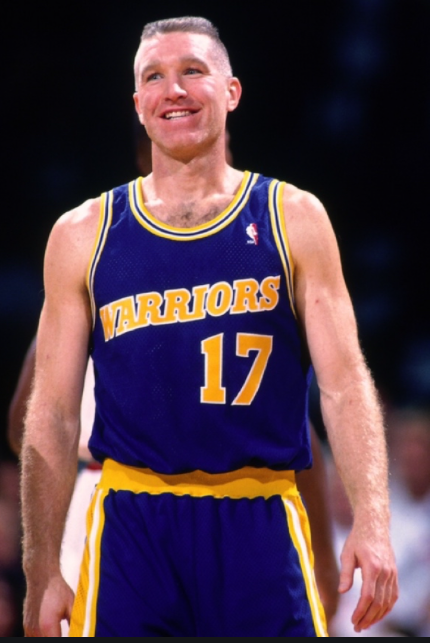
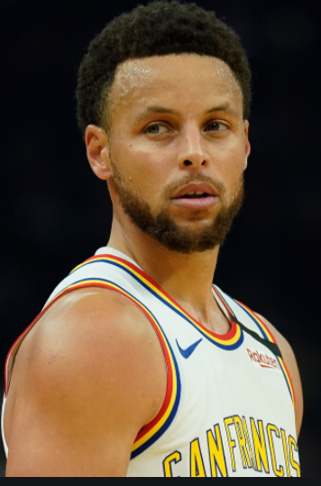

Warriors
 The Golden State Warriors are an American professional basketball team based in San Francisco. The Warriors compete in the National Basketball Association (NBA), as a member of the league's Western Conference Pacific Division. Founded in 1946 in Philadelphia, the Warriors moved to the San Francisco Bay Area in 1962 and took the city's name, before changing its geographic moniker to Golden State in 1971. They play their home games at the Chase Center.
The Warriors won the inaugural Basketball Association of America (BAA) championship in 1947, and won again in 1956, led by Hall of Fame trio Paul Arizin, Tom Gola, and Neil Johnston. After the trade of star Wilt Chamberlain in January 1965, the team finished the 1964–65 season with the NBA's worst record (17–63). Their rebuilding period was brief due in large part to the Warriors drafting of Rick Barry four months after the trade. In 1975, star players Barry and Jamaal Wilkes powered the Warriors to their third championship, widely considered one of the biggest upsets in NBA history.
The team struggled in the 1980s, then became playoff regulars at the turn of the decade with stars Tim Hardaway, Mitch Richmond, and Chris Mullin, nicknamed "Run TMC". The team returned to championship glory in 2015, led by Stephen Curry, Klay Thompson, and Draymond Green; they won again in 2017 and 2018, with the help of former MVP Kevin Durant.
Nicknamed the Dubs as a shortening of "W's", the Warriors hold several NBA records: best regular season, most wins in a season (regular season and postseason combined), and best postseason run. Curry and Thompson are generally considered among the greatest backcourts of all time. Only the Los Angeles Lakers and Boston Celtics have more NBA championships. The Warriors are the third most valuable NBA franchise and the fifth-highest valued sports franchise in the entire world, with an estimated value of $4.3 billion.
The Golden State Warriors are an American professional basketball team based in San Francisco. The Warriors compete in the National Basketball Association (NBA), as a member of the league's Western Conference Pacific Division. Founded in 1946 in Philadelphia, the Warriors moved to the San Francisco Bay Area in 1962 and took the city's name, before changing its geographic moniker to Golden State in 1971. They play their home games at the Chase Center.
The Warriors won the inaugural Basketball Association of America (BAA) championship in 1947, and won again in 1956, led by Hall of Fame trio Paul Arizin, Tom Gola, and Neil Johnston. After the trade of star Wilt Chamberlain in January 1965, the team finished the 1964–65 season with the NBA's worst record (17–63). Their rebuilding period was brief due in large part to the Warriors drafting of Rick Barry four months after the trade. In 1975, star players Barry and Jamaal Wilkes powered the Warriors to their third championship, widely considered one of the biggest upsets in NBA history.
The team struggled in the 1980s, then became playoff regulars at the turn of the decade with stars Tim Hardaway, Mitch Richmond, and Chris Mullin, nicknamed "Run TMC". The team returned to championship glory in 2015, led by Stephen Curry, Klay Thompson, and Draymond Green; they won again in 2017 and 2018, with the help of former MVP Kevin Durant.
Nicknamed the Dubs as a shortening of "W's", the Warriors hold several NBA records: best regular season, most wins in a season (regular season and postseason combined), and best postseason run. Curry and Thompson are generally considered among the greatest backcourts of all time. Only the Los Angeles Lakers and Boston Celtics have more NBA championships. The Warriors are the third most valuable NBA franchise and the fifth-highest valued sports franchise in the entire world, with an estimated value of $4.3 billion.
Christopher Paul Mullin (born July 30, 1963) is an American former professional basketball player, executive and coach. He is a two-time Olympic Gold medalist and a two-time Naismith Memorial Basketball Hall of Fame inductee (in 2010 as a member of the 1992 United States men's Olympic basketball team—"The Dream Team"—and in 2011 for his individual career). Mullin played shooting guard and small forward in the National Basketball Association (NBA) from 1985 to 2001. During his college basketball career for the St. John's Red Storm (called "Redmen" at the time), he was named Big East Player of the Year three times and was a member of the 1984 U.S. Men's Olympic Basketball team, Mullin was chosen as the seventh pick by the Golden State Warriors in the first round of the 1985 NBA draft. He returned to the Olympics in 1992 as a member of the "Dream Team", which was the first American Olympic basketball team to include professional players. He played with the Warriors from the 1985–86 until the 1996–97 season. Thereafter, Mullin played with the Indiana Pacers from 1997 until the 1999–2000 season. He retired after the 2000–01 season, playing for his original team, the Warriors. He later served as special advisor for the Sacramento Kings and general manager of the Golden State Warriors. Mullin served as the head coach of the Red Storm men's basketball team from 2015 to 2019. In late 2010, Arenas was traded to the Orlando Magic. After the 2011 NBA lockout, Arenas was the first NBA player to be waived under the "amnesty clause." He signed with the Memphis Grizzlies for the 2011–12 NBA season. Following the end of the season, he signed with the Shanghai Sharks of the Chinese Basketball Association and played one season before retiring. Off the court, Carter established the Embassy of Hope Foundation, assisting children and their families in Florida, New Jersey, and Ontario. He was recognized in 2000 as Child Advocate of the Year by the Children's Home Society, and he received the Florida Governor's Points of Light award in 2007 for his philanthropy in his home state.
Wardell Stephen "Steph" Curry II (/ˈstɛfən/ STEF-ən; born March 14, 1988) is an American professional basketball player for the Golden State Warriors of the National Basketball Association (NBA). Many analysts and players have called him the greatest shooter in NBA history. He is credited with revolutionizing the game of basketball by inspiring teams to regularly utilize the three-point shot. A six-time NBA All-Star, Curry has been named the NBA Most Valuable Player (MVP) twice and has won three NBA championships with the Warriors. The son of a former NBA player Dell and the older brother of current NBA player Seth, Curry played college basketball for the Davidson Wildcats. He set the all-time scoring record for both Davidson and the Southern Conference and was twice named the conference's player of the year. During his sophomore year, Curry also set the single-season NCAA record for three-pointers made, and was then selected by the Warriors with the seventh overall pick in the 2009 NBA Draft. In 2014–15, Curry won his first MVP award and led the Warriors to their first championship since 1975. The following season, he became the first player in NBA history to be elected MVP by a unanimous vote and to lead the league in scoring while shooting above 50–40–90. That same year, the Warriors broke the record for the most wins in an NBA season en route to reaching the 2016 NBA Finals, which they lost to the Cleveland Cavaliers in seven games. Curry helped the Warriors return to the NBA Finals in 2017, 2018 and 2019, winning back-to-back titles in 2017 and 2018, before being defeated by the Toronto Raptors in 2019. During the 2012–13 season, Curry set the NBA record for three-pointers made in a regular season, with 272. He surpassed that record in 2015 with 286, and again in 2016 with 402. Curry is currently third in all-time made three-pointers in NBA history, and alongside teammate Klay Thompson, the pair have earned the nickname of the Splash Brothers; in 2013–14, they set the record for combined three-pointers in an NBA season with 484, a record they broke the following season (525), and again in the 2015–16 season (678).